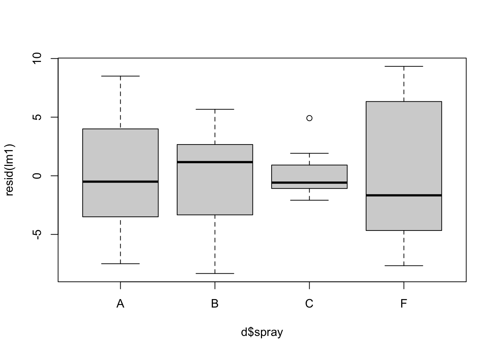
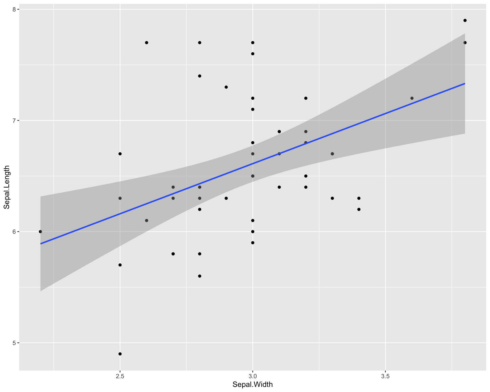
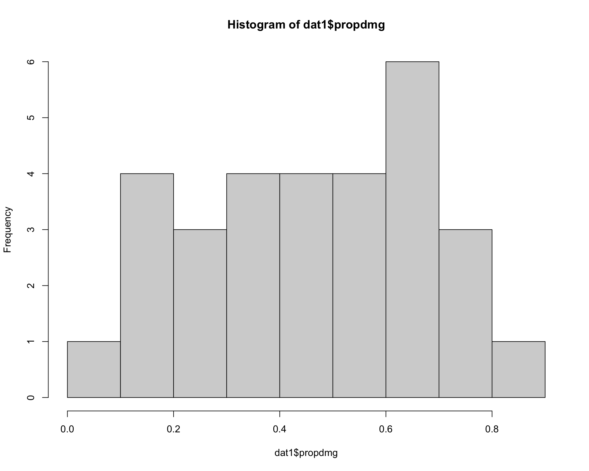
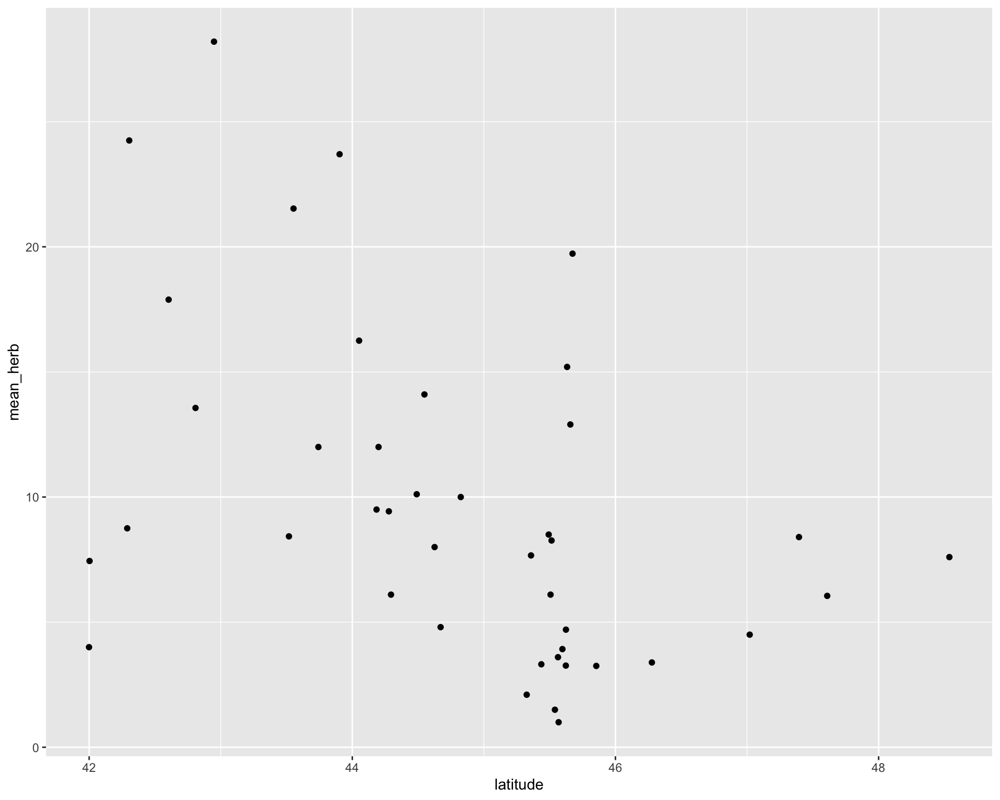
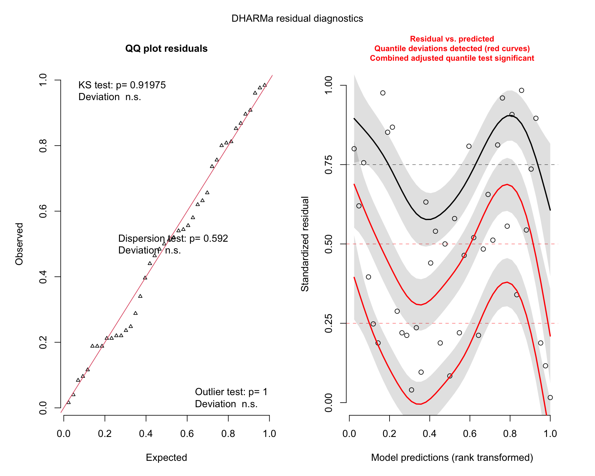
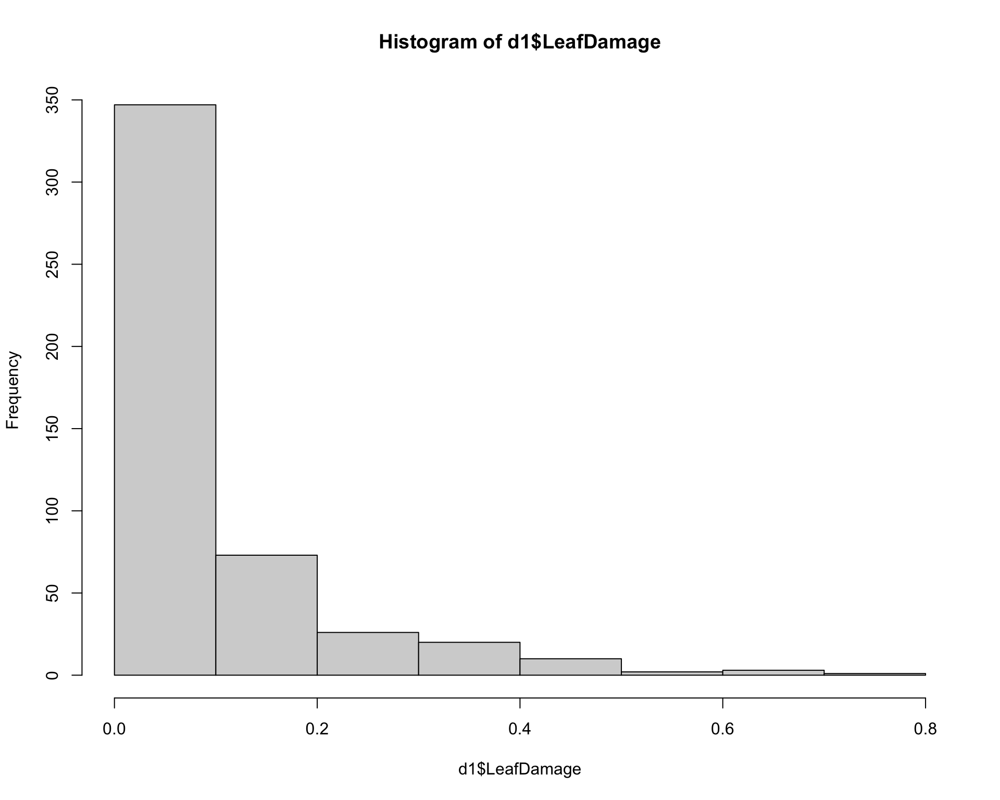
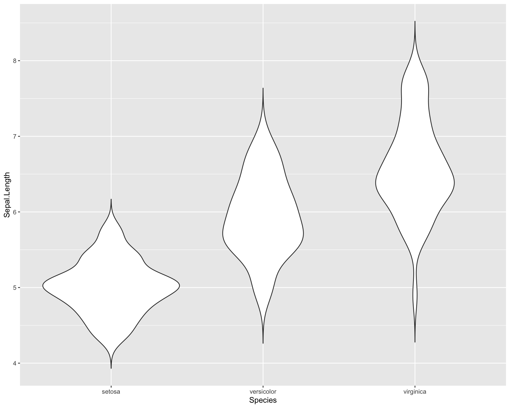
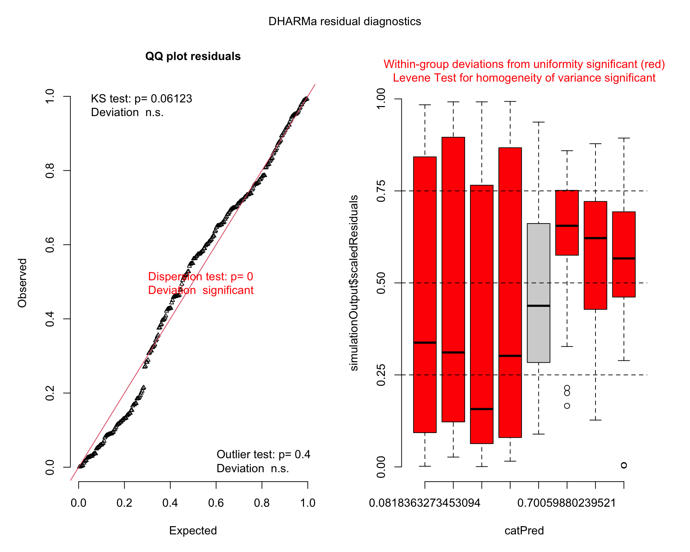

Chapter 2 Introduction to Data Visualization
We will practice plotting data using the iris dataset.
data(iris) # load data (already exists in base R)head(iris)## Sepal.Length Sepal.Width Petal.Length Petal.Width Species
## 1 5.1 3.5 1.4 0.2 setosa
## 2 4.9 3.0 1.4 0.2 setosa
## 3 4.7 3.2 1.3 0.2 setosa
## 4 4.6 3.1 1.5 0.2 setosa
## 5 5.0 3.6 1.4 0.2 setosa
## 6 5.4 3.9 1.7 0.4 setosa2.1 Continuous Variables
2.1.1 Scatterplots with base R
Plotting sepal length by width
plot(Sepal.Length~Sepal.Width, data=iris)
Specify colors using the “col =” argument within the plot function wrapper.
plot(Sepal.Length~Sepal.Width, data=iris, col="blue")
We can get more complex by specifying solid dots with separate colors for each species.
plot(Sepal.Length~Sepal.Width, data=iris,
pch=16, col=c("red","blue","purple")[iris$Species] ) 
We can specify to plot only one species by editing the “data=” argument. The “==” in the code means “exactly equals.” Using just “=” will not work.
### plot only the data for Iris virginica
plot(Sepal.Length~Sepal.Width, data=iris[iris$Species=='virginica',]) ## use brackets to select the columns you want
Finally, we can add a standard linear trendline across the data.
plot(Sepal.Length~Sepal.Width, data=iris[iris$Species=='virginica',])
abline(lm(Sepal.Length~Sepal.Width,
data=iris[iris$Species=='virginica',])) ## adds line from lm2.1.2 Scatterplots with ggplot2
We need the tidyverse package to use ggplot2.
library(tidyverse) ## install tidyverse if necessaryLet’s start with a simple plot of sepal length by width
ggplot(data=iris,
aes(x=Sepal.Width,
y=Sepal.Length)) +
geom_point() 
We can also add colors to the points just liek base R using the “color =” argument within the geom_point function.
ggplot(data=iris, aes(x=Sepal.Width,
y=Sepal.Length)) + geom_point(color='blue') 
We can also color the points by species by including the “color =” argument within the aes() wrapper in the first ggplot line. aes() sets the aesthetics of the plot based on the data that is being used. The data is specified with the “data =.”
ggplot(data=iris, aes(x=Sepal.Width,
y=Sepal.Length,
color=Species)) +
geom_point() 
What if we want to see the different species in different plot panels? We can do this by using facet_wrap(). facet_wrap() allows you to facet the plot by a a categorical variable from the dataset. In the example below, we facet the plot above by species.
ggplot(data=iris, aes(x=Sepal.Width,
y=Sepal.Length,
color=Species)) +
geom_point() +
facet_wrap(~Species) 
Now finally let’s redo the plots we did in base R. Let’s first plot only one species. We can do this by manipulating the data set being used within the “data =” argument. We filter the original dataset “iris” so that only a specific species is being used in the plot.
ggplot(data=iris %>% filter(Species=='virginica'),
aes(x=Sepal.Width,
y=Sepal.Length)) +
geom_point() +
labs(title = "Plot with only Virginica") #we can add a title to the plot using the labs() and specifying the "title =" argument
Now let’s plot the data with a linear trendline. To do this we use geom_smooth(). Within geom_smooth() we use the argument “method =” to specify the type of trendline. Since we want a linear one based on a linear model we use “lm.”
ggplot(data=iris %>% filter(Species=='virginica'),
aes(x=Sepal.Width,
y=Sepal.Length)) +
geom_point() +
geom_smooth(method='lm')
We can also add a separate trendline for all three species. ggplot2 can do this in a very user friendly way. By specifying different colors for different species in the first ggplot() line, the usage of geom_smooth() automatically applies the categorization by colors to the trendlines resulting in separate trendlines for each species.
ggplot(data=iris, aes(x=Sepal.Width,
y=Sepal.Length,
color=Species)) +
geom_point() +
geom_smooth(method='lm')
If we move the “color =” argument to the outside of the aes() and just specify a single color. it changes the colors of all points.
ggplot(data=iris, aes(x=Sepal.Width,
y=Sepal.Length)) +
geom_point(color="blue") +
facet_wrap(~Species) +
geom_smooth(method='lm')
2.2 Fancy Scatterplots
For more appealing color options we use the viridis package
library(viridis) ## install viridis package if necassaryLet’s set up a basic plot from the examples shown above. The default colors work fine but could be better and the plot background could also be cleaner and more improved.
ggplot(data=iris, aes(x=Sepal.Width,
y=Sepal.Length, color=Species)) +
geom_point() +
geom_smooth(method='lm')
We can change the background elements of the plot (a.k.a the “theme”) with preset defaults such as theme_bw()
ggplot(data=iris,
aes(x=Sepal.Width,
y=Sepal.Length,
color=Species)) +
geom_point() +
geom_smooth(method='lm') +
theme_bw()
We can also change the size of the points by adding a “size =” argument in the geom_point(). Also, the colors can be improved (e.g. making them more color-blind friendly) by using the scale_color_virdis(). Within the virdis function, we specify that we want a discrete color scale with “discreet = TRUE.”
ggplot(data=iris, aes(x=Sepal.Width,
y=Sepal.Length, color=Species)) +
geom_point(size=3) + # change point size to make them bigger
geom_smooth(method='lm') +
scale_color_viridis(discrete = TRUE) + # change points to a color-blind friendly palette. Can specify specific colors
theme_bw() # new theme
We can change the shapes of the points based on species with the “shape =” argument in the first ggplot() line. We specify that this argument equals “Species” which basically means, set different shapes for different species. We can further specify which shapes we want for the three species with the scale_shape_manual().
ggplot(data=iris, aes(x=Sepal.Width,
y=Sepal.Length,
shape=Species)) +
geom_point(size=3) +
geom_smooth(method='lm') +
scale_shape_manual(values=c("circle","square","triangle")) +
theme_bw()
Let’s specify with colors and shapes. Here’s an annotated code chunk to show exactly what components are being specified for the plot.
ggplot(data=iris, aes(x=Sepal.Width, #Sets x axis variable
y=Sepal.Length, #Sets y axis variable
shape=Species, #use different shapes for species
color=Species #use different colors for species
)) +
geom_point(size=3) + #set size if points
geom_smooth(method='lm') + #set a linear model trendline
scale_color_viridis(discrete=T) + #color palette
scale_shape_manual(values=c("circle","square","triangle")) + #specify which shapes
theme_bw() #different more black and white theme
We can also facet the plot above and increase the font size
ggplot(data=iris, aes(x=Sepal.Width,
y=Sepal.Length,
shape=Species,
color=Species)) +
geom_point(size=3) +
geom_smooth(method='lm') +
scale_color_viridis(discrete=T) +
scale_shape_manual(values=c("circle","square","triangle")) +
facet_wrap(~Species) + #facet by species
theme_bw(base_size = 14) # increase font size for the entire plot
2.3 Continuous Variables
2.3.1 Boxplots with base R
This line of code will make a simple boxplot. Notice the usage of “~.” To avoid errors, make sure your continuous variable comes before “~” and your categorical variable comes after.
plot(Sepal.Length~Species, data=iris) #make boxplot
We can add colors to the different boxplots
plot(Sepal.Length~Species, data=iris, col=c("red","blue","purple")) #make boxplot with color
2.4 Different types of plots for categorical data with ggplot2
To make a boxplot with ggplot we use geom_boxplot().
ggplot(iris, aes(x=Species, #variable on x axis
y=Sepal.Length #variable on y axis
)) +
geom_boxplot() #specify boxplot option
We can also overlay points on the boxplot.
ggplot(iris, aes(x=Species,
y=Sepal.Length
)) +
geom_boxplot() +
geom_point()
To more clearly assess the scatter of the points we can jitter their position with geom_jitter()
ggplot(iris, aes(x=Species, y=Sepal.Length)) + geom_boxplot() +
geom_jitter()
We may want to adjust how much jitter we give the points. This can be done with the “height =” and “width =” arguments.
ggplot(iris, aes(x=Species,
y=Sepal.Length)) +
geom_boxplot(outlier.shape=NA) +
geom_jitter(height=0, width=.15)
We can also make dot plots for the data using geom_dotplot().
ggplot(iris, aes(x=Species,
y=Sepal.Length)) +
geom_dotplot(binaxis = "y", stackdir = "center") 
There are also violin plots with geom_violin().
ggplot(iris, aes(x=Species, y=Sepal.Length)) +
geom_violin(trim=F) 
A combination of violin plots with dot plots is also possible.
ggplot(iris, aes(x=Species, y=Sepal.Length)) +
geom_violin(trim=F) +
geom_dotplot(binaxis = "y", stackdir = "center") 
Finally, we can also do violin plots with boxplots!
ggplot(iris, aes(x=Species, y=Sepal.Length)) +
geom_violin(trim=F, bw=.5) +
geom_boxplot(width=.1)
2.4.1 Adding colors and summary statistics (e.g. averages) to plots
Let’s change the color of the boxes. Note we don’t use the “color =” argument but instead use the “fill =” argument. This is because fill will affect the fill color inside the box while color will affect the color of the border of the box. As such, when we use the viridis function for the nicer colors, we specify scale_fill_virdis rather than scale_color_virdis.
ggplot(iris, aes(x=Species,
y=Sepal.Length,
fill=Species)) +
geom_boxplot(outlier.shape=NA) +
geom_jitter(height=0, width=.15) +
scale_fill_viridis(discrete=T) 
If we want to see the averages or means per species we can do this by using stat_summary() and specifying “mean” with the “fun =” argument.
ggplot(iris, aes(x=Species, y=Sepal.Length, fill=Species)) +
geom_boxplot(outlier.shape=NA) +
geom_jitter(height=0, width=.15) +
scale_fill_viridis(discrete=T) +
stat_summary(fun=mean, geom="point", size=4, color="red") ## add point for mean
Let’s edit the theme of the plot above
ggplot(iris, aes(x=Species, y=Sepal.Length, fill=Species)) +
geom_boxplot(outlier.shape=NA) +
geom_jitter(height=0, width=.15) +
scale_fill_viridis(discrete=T) +
stat_summary(fun=mean, geom="point", size=4, color="red") +
theme_bw(base_size = 16) #theme change
To save a plot like this as a .tiff we should first assign the plot as an object. In the example below we assign is as an object called “plot1” using the “<-.”
plot1 <- ggplot(iris, aes(x=Species, y=Sepal.Length, fill=Species)) + ## plot now saved as object called 'plot1'
geom_boxplot(outlier.shape=NA) +
geom_jitter(height=0, width=.15) +
scale_fill_viridis(discrete=T) +
stat_summary(fun=mean, geom="point", size=3, color="red") +
theme_bw(base_size = 16) Then we use ggsave() to save the plot into whatever working directory you are using. We can set the dimensions of the image and we specify the plot we want to save using “plot1.”
ggsave("ExamplePlot.tiff", #file name to be used
plot1, #what plot being saved
width=4, #width
height=3, #height
units="in", #units being used for width and height
dpi=300) #resolution of photo, higher number = better2.5 Breakout group challenge
For this challenge use the mtcars dataset:
data(mtcars)
head(mtcars)## mpg cyl disp hp drat wt qsec vs am gear carb
## Mazda RX4 21.0 6 160 110 3.90 2.620 16.46 0 1 4 4
## Mazda RX4 Wag 21.0 6 160 110 3.90 2.875 17.02 0 1 4 4
## Datsun 710 22.8 4 108 93 3.85 2.320 18.61 1 1 4 1
## Hornet 4 Drive 21.4 6 258 110 3.08 3.215 19.44 1 0 3 1
## Hornet Sportabout 18.7 8 360 175 3.15 3.440 17.02 0 0 3 2
## Valiant 18.1 6 225 105 2.76 3.460 20.22 1 0 3 1- Plot x=mpg by y=hp
- Color code points by wt
- Add trendline. Make the background white. theme_bw is okay, if time try playing around with other themes.
- Make a boxplot of mpg for the three cyl groups. You should have three boxes. If only one, why?
- Change colors, themes, add datapoints, etc.